Round 2: every note, what was done
70 open notes from Bill, Karen and Chris, worked in the order of the comments dashboard (newest first). None is marked resolved yet, so the numbers stay stable; replies go in when Alex has checked. Nothing is committed or uploaded.
19 Questions for Ivaylo
The mockup follows the notes, but the backend is his. For each change: what we did, the note word for word with its author, the before screenshot, and the question that stays open.
- 1. Accounting · View All: Print button commented out
- Done: the Print button in the header is commented out in
pages/staff/accounting-view-all-gen11.html. - Note (Bill, Nov 11): "again I don't think we need a print button to print out this page. if someone was really needing to print the page they can use the browser print button but I think they use downloadable spreadsheets vs ever printing this page"
- Question: is Print wired up on the new backend, and is it OK to drop it there too?
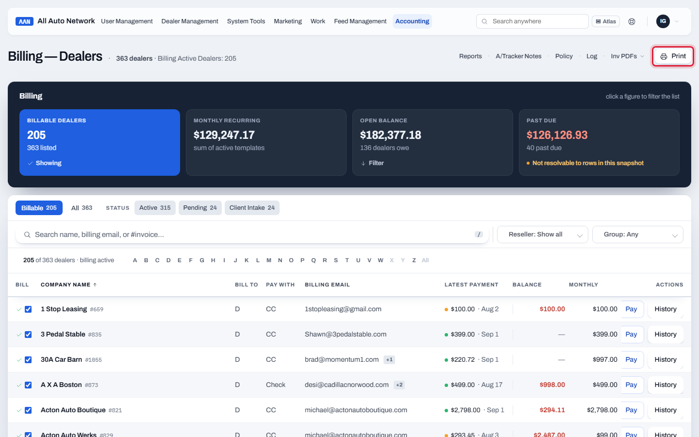
01-accounting-print - Done: the Print button in the header is commented out in
- 2. Manage Dealers: Print button commented out
- Done: the Print button in the header is commented out in
pages/staff/manage-dealers-gen11.html. The JS is guarded so the page still works without it. - Note (Bill, Nov 11): "button not needed, can you browser print button if you want to print this page o…" (the rest is in mockupdb, note mwchkdzrszx3p)
- Question: same as 1.
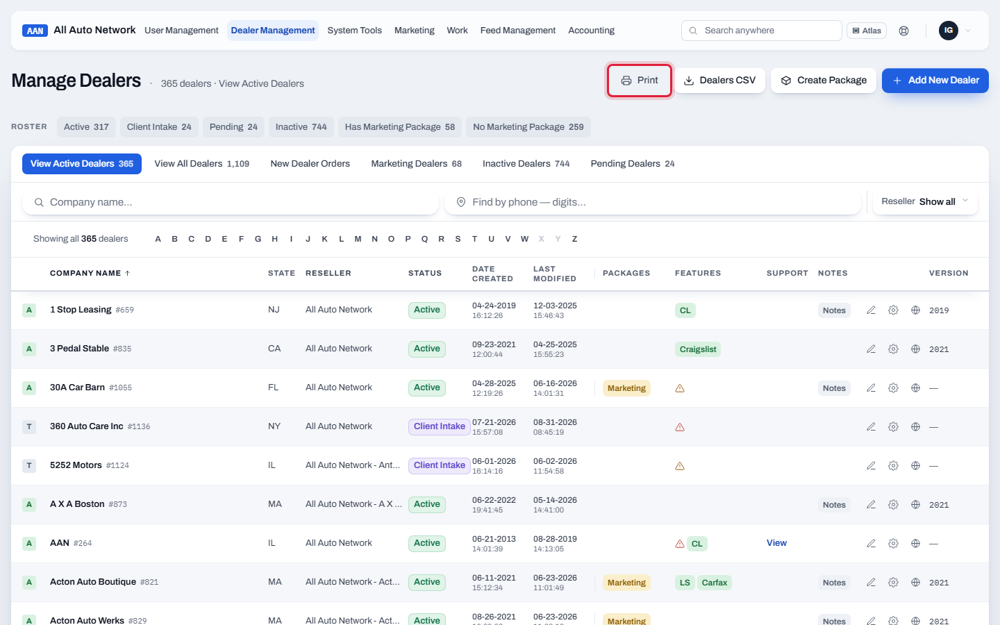
02-manage-dealers-print - Done: the Print button in the header is commented out in
- 3. Accounting · View All: Marketing column added
- Done: a Marketing column was added. The flag comes from the "Marketing" package badge in the Manage Dealers export, matched by dealer id. 44 of the 205 billable dealers have it.
- Note (Bill, Nov 11): "missing a Marketing column so we can see who has marketing and who doesn't…" (mwcjcay4yaa2x)
- Checked in live (Nov 16): the flag is the dealer's Marketing Package. Live Manage Dealers counts it: "Has Marketing Package = 58 · Does Not Have = 256".
- Question: can Accounting read the marketing_package flag directly?
- 4. Dealer Edit: three zones commented out (Inventory & DMS, Email Routing, Web & Domains)
- Done: the three zones are hidden through
ZONE_HIDDENinpages/staff/dealer-edit-gen11.js. Their data stays in the fixture, and removing an id from the list brings that zone back. - Note (Bill, Nov 11, ×3: mwcj5pev3skmc, mwcj5iei1o4mc, mwcj5cknvn92n): "I know we use to have another tab in the dealer setup forms but we removed that tab on purpose because it was never used and I think this was on that screen otherwise not sure where you got this from so it should be removed"
- Question: these zones came from the new-backend export (
s12-dealer-file-*.html). Do these fields still exist in the new backend? Should they be removed there too, or kept hidden?
- Done: the three zones are hidden through
- 5. Dealer Edit: Multi Dealer = Yes reveals Select Group (built in the mockup)
- Note (Bill, Nov 11, mwciye7vsktsn): "in the live system if you click yes a couple more fields shows up"
- Done: checked in the live Dealer Account Settings (Nov 16). Yes reveals one field, "Select Group", a list of 47 dealer groups. The mockup now shows it beside the switch.
- Questions: does the new backend keep the dealer groups and the multi_dealer_group link? Where is the list of groups edited?
- Security, found in the live list (Nov 16): the dealer-group list has two junk entries,
1'and1',sleep(3))-- -. These are SQL-injection test strings, and they were saved as groups. Somebody probed this form. Please check that the old form escapes its input, and remove the two entries.
- 6. Manage Dealers: "CL" feature tag hidden, "LS" relabelled "LMS", all tags shown
- Done:
FEAT_HIDDEN = ['CL']andFEAT_LABEL = { LS: 'LMS' }inpages/staff/manage-dealers-gen11.js. The "+N" overflow is commented out, so every tag shows. - Notes (Bill, Nov 11): "remove "CL" it is old feature that is no longer used so this is not needed in the display" (mwcifptb5spcq) · "change LS to LMS so that we know what it means" (mwchs5ryjvnk7) · "please have it show all items and not a +2 as we need to see these items as no way to know what they have without seeing it" (mwci0o9t1gc4v)
- Question: the export's CL title reads "carfax credentials set (legacy legend says Craigslist)". What does the backend compute CL from, and can the feature sweep stop producing it? Can the sweep emit "LMS" instead of "LS"?
- Checked in live (Nov 16): the live legend lists Craigslist (icon), Carfax (icon), LS = LMS, Facebook (icon), IN = Incentives, Ebay (icon) and LV = Lot Vantage. CL is a separate text code that the legend does not list. The new backend's sweep produces CL, LS, CRAIGSLIST, CARFAX and INCENTIVES only. Are Facebook, Ebay and Lot Vantage still needed? If yes, the sweep is missing them. And is Craigslist still used? The live dealer menu has no Craigslist tool; the CRAIGSLIST tag stays in the mockup (Alex, Nov 16).
- Done:
- 7. Manage Dealers: "Dealer Intake Form Answers" link and the "Config Manual" popup (built in the mockup)
- Done: two text links at the right end of the Roster strip. Config Manual opens the live popup's 21 page-template examples, word for word (checked Nov 16). Dealer Intake Form Answers is a Google Sheet link in the live system; the mockup does not carry the sheet's address.
- Note (Bill, Nov 11, mwci4yrmusb49): "Need a "Dealer Intake Form Answers" link on the right side here. Also a link to "Config Manual" that opens a popup with page template examples as we use these a lot too"
- Questions: in the live system the Config Manual text is hard-coded in the page (a hidden #notes block). Should the new backend keep it as static text or make it editable? Should the Intake link point to the same Google Sheet?

08-manage-dealers-tally - 8. Single Ticket: Work Order shown again; head chips open its fields
- Done: the Work Order (Classification · Contact · Schedule & Billing), hidden since Oct 30, is back on the page and in the navigator. The head chips (status, priority, work type) now jump to their fields.
- Notes (Bill, Nov 11): "Where are the fields for assiging to the dealership (sometimes tickets get mis-assigned to the wrong dealer and that needs to be able to be changed. Also there should be fields to enter the Name, email(s), phone and subject line and they should always be present in the tickets…" (mwcgkh4v09gbr) · "these should be editable so that if assigned wrong it can be changed easily" (mwch2jlwercf9)
- Question: does changing the Dealership on a ticket move its history and its billing to the new dealer?
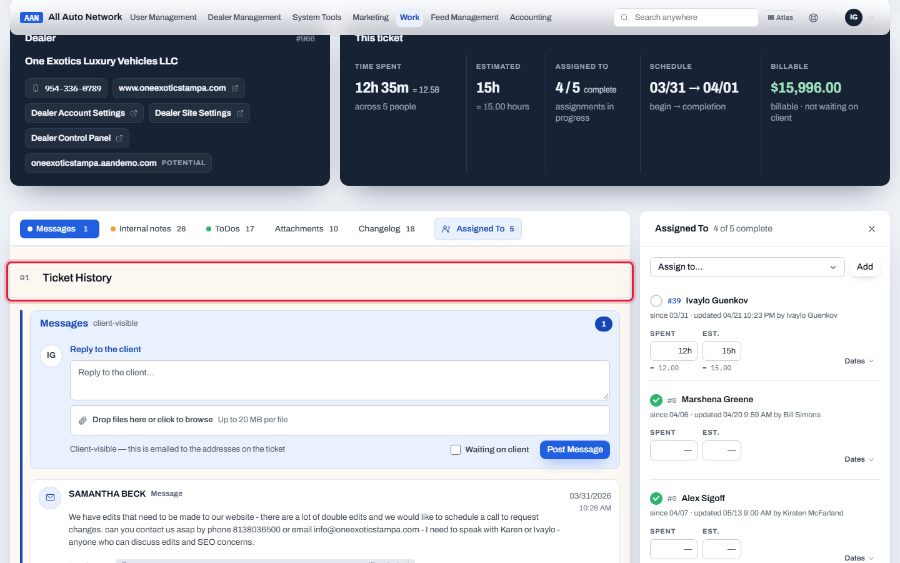
13-single-ticket-no-client-fields 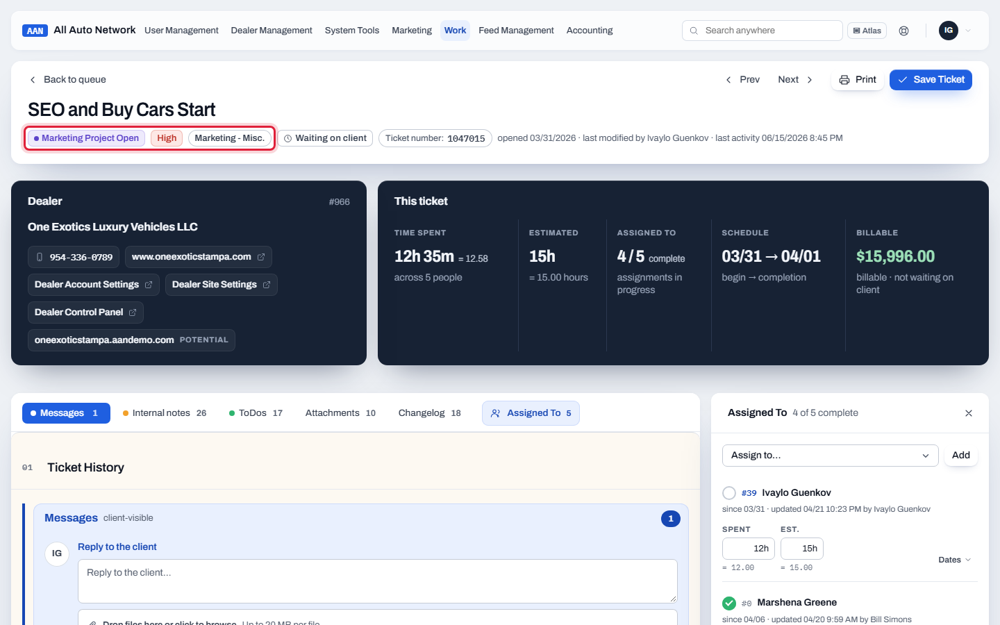
12-single-ticket-head-chips - 9. Single Ticket: Dates toggle commented out, time examples open
- Done: every assignee card always shows Begin / Done by (the Dates button is commented out). The export's "Time entry help" is open under the time totals.
- Notes (Bill, Nov 11): "dates should always be open and available we do not need a toggle that wastes time when assigning out tickets for more clicks." (mwcg2nnjh0v56) · "We need the time examples like in the live system … the time display is in 5 minute increments from 5 minutes to 1 hour" (mwcg51f5qbzag)
- Question: the export lists 10 min = 0.16 and 40 min = 0.66 (truncated), while 20 min = 0.33 and 50 min = 0.83 are rounded. Should the help show 0.17 / 0.67, and does the backend store what is typed?

17-single-ticket-dates-toggle 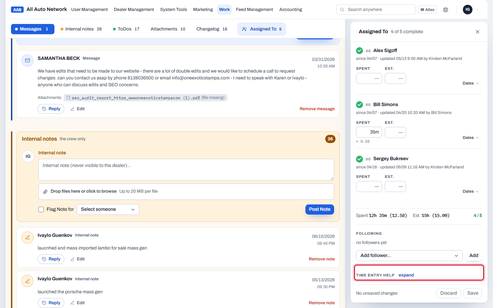
16-single-ticket-time-help - 10. Single Ticket: ToDo attachments and Remove ToDo (built in the mockup)
- Note (Bill, Nov 11, mwcgflwva7a2i): "need ability to add a file attachement to a todo as well"
- What we know: the live system has this option (Alex, Nov 15), so the mockup now has it: the ToDo composer carries the same file drop as Messages. In the new-backend export the only upload is the Messages composer.
- Also (Alex, Nov 15, a new feature added to the concept on his responsibility): a ToDo can be removed from its Edit ("Remove ToDo", which deletes its files too). The export has removeMessage and removeNote, but no removeTodo.
- Questions: does the new backend store files on a ToDo yet, and with which endpoint? Is there a removeTodo, or can it be added the same way as removeNote?
- 11. My Work Queue: the assignee's own dates on the list (built in the mockup)
- Note (Bill, Nov 11, mwcfweit0hqkn): "There should be 2 sets of dates here...one is for the person assigned to the tickets dates and the other is the ticket dates itself … so both dates are needed on the work lists."
- Done: the live My Work list has My Begin Date · My Completion Date · Begin Date · Completion Date (checked Nov 16). The mockup now has the same four columns. The new-backend export's work queue has only Begin Date and Completion Date.
- Question: can the work-queue query return the viewer's own Begin / Completion per ticket (set on the ticket's Assigned To)?
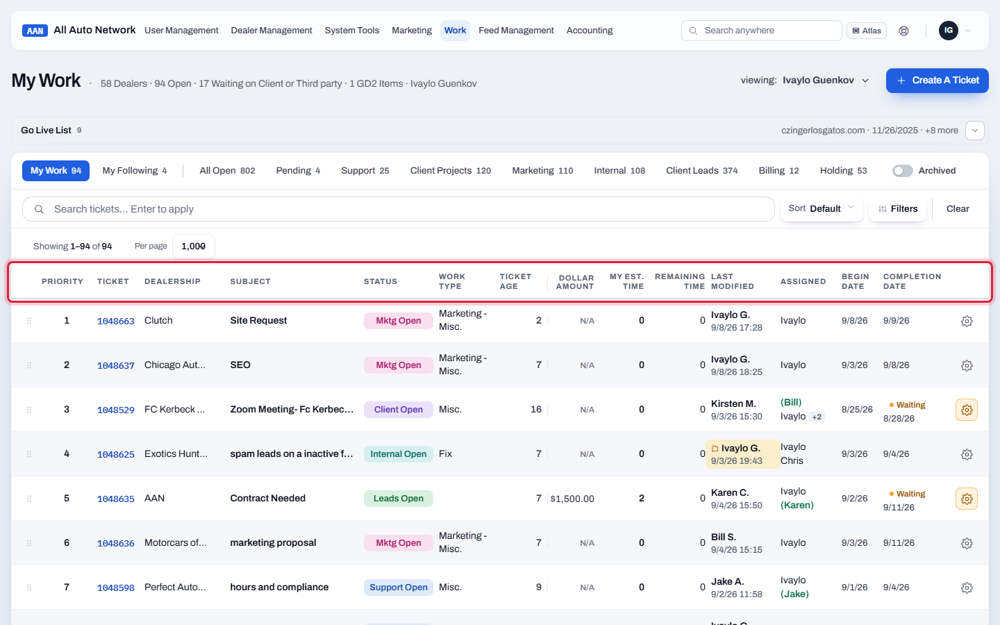
18-mwq-dates-header - 12. My Work Queue: rank as a drop-down, all assignees, Reporting filter
- Done: the Priority rank is a
<select>0–299 (the click-to-edit number field is gone). Every assignee is listed. Reporting is in Filters, with the production options. The Filters panel stays open and is remembered. - Notes (Bill, Nov 11): mwcfethdmlinn (rank drop-down) · mwcftqunseq03 (taller bar) · mwcfqpafwz9o1 ("missing the "reporting" search drop down … stay open until we close it based on user")
- Question: how do Tagged As Completed and Marketing Clients filter on the server? Should "stays open" be saved per user on the server rather than in the browser?
- Done: the Priority rank is a
- 13. Single Lead: one "Internet Management Checkoff" checkbox
- Done: the "Internet" checkbox is commented out; the remaining one is labelled "Internet Management Checkoff".
- Note (Bill, Nov 10, mwb3452xjbl4r): "this should be one checkbox labeled "Internet Management Checkoff" not 2 checkboxes"
- Question: the new backend sends two flags (
internet,imc). Which one does the single checkbox write?

26-single-lead-two-checkboxes - 14. Single Lead: ReSend / Email, Credit App, Paperwork
- Notes (Bill, Nov 10): mwb9bc6z72t11 (ReSend / Email, "a new feature Dima just added") · mwb9lccr0nb5j (Credit App tab, hidden for users blocked from credit apps) · mwb9ziplpqeam (Paperwork forms filled with the customer's and dealer's info)
- Question: are ReSend / Email, the Credit App view (with its per-user block) and Paperwork in the new backend yet? What are the endpoints?
- Built Nov 16 (#25): a Write email composer in the Emails section, matching the live Email tab (To, BCC, Subject, File to attach, message, Send). Questions: which endpoint sends a lead email and stores it in the lead's Outbox? Does the new backend keep the rich-text editor (the live one is CKEditor 5)?
- Built Nov 16 (#22): a Dealer Paperwork section, as in the live lead card. In live each form is a per-dealer template that sale_paperwork.php fills from the lead; Chicago Motor Cars and Miller have only Credit Application. Questions: where does the new backend keep each dealer's paperwork templates, and does it fill them from the lead the same way?
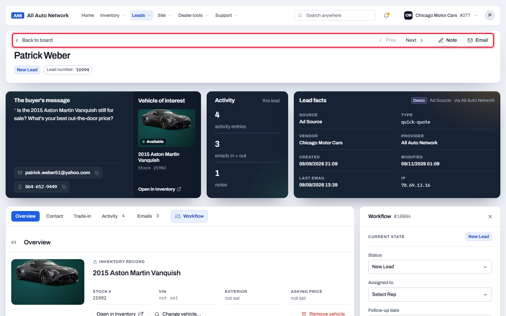
24-single-lead-head-buttons 
23-single-lead-tabs-no-credit-app 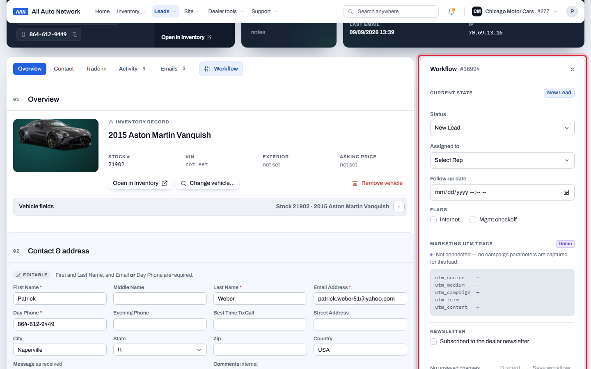
22-single-lead-workflow-no-paperwork 
25-single-lead-write-email - 15. All Leads: select all, bulk status; Email mode, Comments column, Stock # list
- Done: a select-all checkbox and "Set status…" in the selection tray. Both are in the export.
- Notes (Bill, Nov 10): mwb31f38hqunv (check-all; "Email" and "Bulk Update" radios) · mwb2ymcdrv8zc (Comments column with the last comment date) · mwb2s0xqpezsw ("Available Stock # [drop down] … Include Sold [checkbox]")
- Question: the new backend has bulk Assign and Set status, but no bulk Email, no Comments column and a free-text Stock #. The Comments column and the Stock # list are now in the mockup (Nov 16). Bulk Email: in the live Lead Manager, "Send Email" sends the selected leads to the Newsletter tools, so it depends on the Newsletter Tools decision (#57). Is it planned?
- Built Nov 16 (#29): More → Vehicle of interest has the live "Available Stocks" list and "Include Sold". Question: which endpoint gives the dealer's available stock (and the sold cars when Include Sold is ticked) for that list?
- Built Nov 16 (#28): a Comments column with the date the last comment was added (live Lead Manager has it). Question: can the leads list return the last-comment date per lead? The demo only knows it when the last activity is "Comments Added".

27-28-all-leads-header 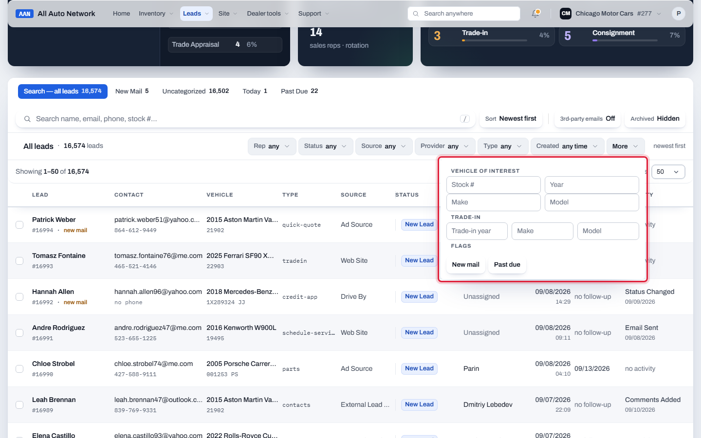
29-all-leads-more - 16. Single Vehicle: fields commented out
- Done:
- More Details: Book Value, Discount, Original Price, Model Number, Body Code, Add Options and Zero Down are commented out (only Location remains).
- CARFAX: Report date and Last checked are out.
- Video: Other video link is out.
- Window Sticker: Open PDF is out.
- Status: Pending is out.
- Notes (Bill, Nov 6): mw5k7kf3fzqyv (Book Value "needs to be deleted from all dealers databases") · mw5k878jxp2l5 (Discount, same) · mw5k9cvi6bbgr (Original Price "is not a real thing") · mw5kah6rw7i9a (Model Number) · mw5katnz159yx (Body Code) · mw5kbsnt5vjra (Add Options) · mw5kcq1t2u97y (Zero Down) · mw5kgqutrltji / mw5kh8di6rxwo (CARFAX dates) · mw5koofnfj54n (Other video link) · mw5kt10f9yar9 (Open PDF) · mw5jxxv6msusc (no Pending)
- Question: are these columns dropped from the new backend's vehicle table too (Bill asks for Book Value and Discount to be deleted from all dealers' databases)? Note the conflict: Karen asked for a Discount column on All Vehicles.

44-50-single-vehicle-more-details 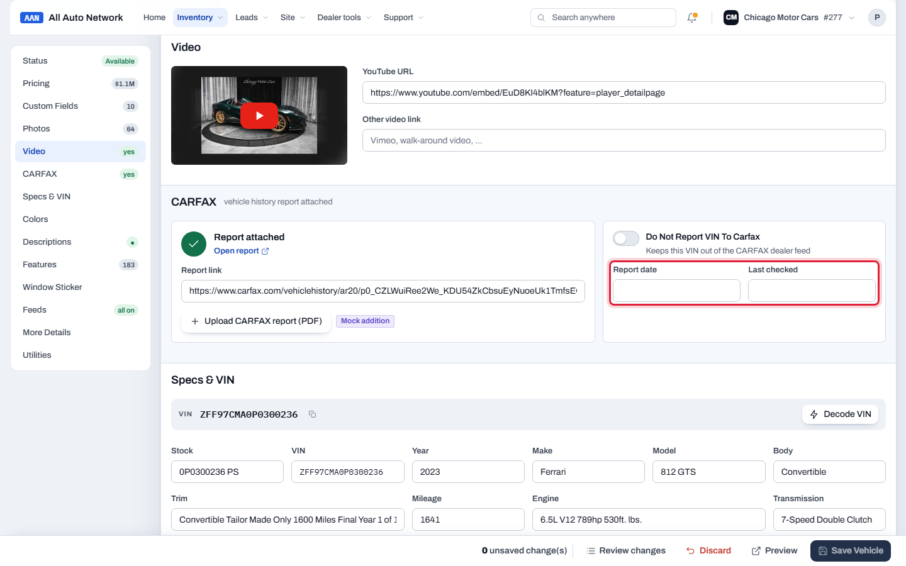
41-42-single-vehicle-carfax-dates 
38-single-vehicle-video 
36-single-vehicle-open-pdf 
53-single-vehicle-status-pending - 17. Single Vehicle: Specs & VIN first, editors swapped, Buyers Guides section, YouTube as a list
- Done:
- Specs & VIN is the first section.
- The HTML editor moved from Bulleted Text to Description 2.
- A Buyers Guides section was added (9 print links plus the guide text).
- YouTube URLs is a textarea, one per line.
- Notes (Bill, Nov 6): mw5k1ld3u3w0b · mw5l3tpdfrmt7 · mw5l2q3vw4ifu · mw5kynn25yg9t · mw5koofnfj54n
- Question: does the backend store several YouTube links in the one field (newline-separated)? Is Description 2 (
caption) HTML-safe on the VDP?

52-single-vehicle-specs-position 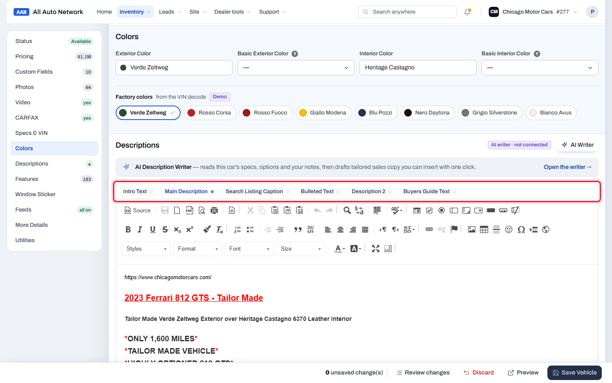
32-33-single-vehicle-desc-tabs 
34-single-vehicle-buyers-guide 38-single-vehicle-video - 18. Single Vehicle: open items
- VIN Decoder Selectable (mw9t6yc4e4hkg, screenshot item25): built in the mockup on Nov 16 as in the live editor (three pick lists, empty state "No selectable for this vehicle"). Where do the decoded styles / engines / transmissions come from in the new backend, and does picking one re-run the decode?
- Edit lock (mw5kfohw9p2s7): built in the mockup on Nov 16 after the live list's unlockVehicle() (View only / Unlock and take control; who and since when at the top of the editor). Does the new backend expose who holds the lock and since when, and an unlock that hands over the next save?
- CARFAX PDF upload (mw5kifnhdwdif): commented out in the mockup (only Mild Collection uses it; CARFAX sends links, not PDFs). Can it be a per-dealer option that only Mild Collection gets?
- Factory sticker and Do Not Report VIN To Carfax are per-dealer custom options in the live system today (
no_carfaxis a custom field). Bill wants both for every dealer after go-live. Can the new backend make them standard fields?
- 19. All Vehicles and the dealer menu
- Done: Feed Out Manager added to the Inventory menu on all four dealer pages. Form Editor added under Site ("AAN admins only"). New submissions, Customers and Referrals are commented out and moved to the New features list, because the live dealer menu does not have them (checked Nov 16). The Photos / Window sticker / Upload photos actions open the editor at those sections.
- Notes (Bill, Nov 6): mw5j2hb43x1oq (Feed Out Manager; "what is New Submissions") · mw5jhlfxpnoy9 (row icons) · mw5jlp578sfst (upload from the list)
- Questions:
- Newsletter Tools (mw5j97noenshu): back in the dealer menu (Alex, Nov 16), only that item, for the email lists and the subscribe forms. Does the new backend keep the list download and the subscribe-form collection? The sending part was the Oct 29 worry.
- Form Editor for admins only (mw5j6akexx0bp): the link carries
data-admin-only. How does the backend tell an admin from a dealer on the dealer pages? - Leads menu (mw5j4jcb9jnl6): the live menu has only the Lead Manager. Customers, Referrals and New submissions are new-backend pages; they are commented out and on the New features list. Are they ready, or do they wait for after go-live?
- The live dealer menu also has Auction Tools, which is not in the new-backend export or the mockup. Is it still used?
- Options filter (mw5io1x6i1qnq): the filter is commented out (it was a mockup demo; neither the live system nor the export has one). Bill wants the keyword search to cover the vehicle's options instead. Can the search query include the options text?
- Bulk edit (mw5i6v4ypnczi): built in the mockup on Nov 16 behind "Inline edit" (Price, Discount Price, Invoice Price, Do Not Display On Site, Sale Pending; one Update), as the live Inventory Manager's in-row editing. Is there an endpoint that saves many vehicles in one call?
- Value totals (mw5i9qmktowkl): is there an endpoint for inventory-wide Discount / Invoice totals?
- Column order per user (mw5iujnxurg28): the mockup has Columns (show, hide, order, reset) and, since Nov 16, the live heading swap menu. It saves in the browser. Can the new backend save the layout per user, as the live system does?
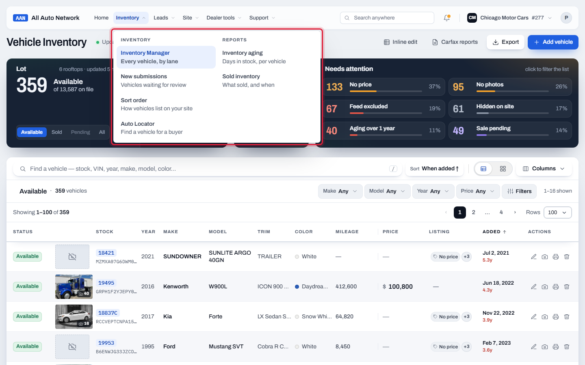
60-dealer-nav-inventory-menu 
59-dealer-nav-leads-menu 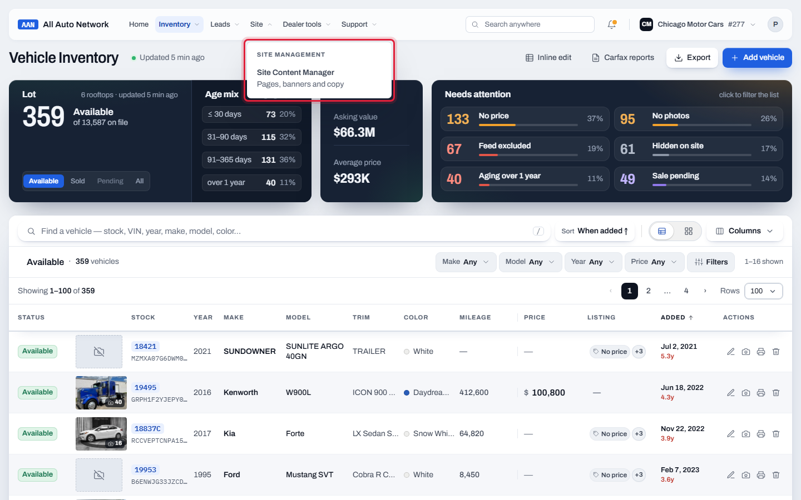
58-dealer-nav-site-menu

0 Questions for Bill and the team
7 Screenshots to ask Bill for
Built from the live system's code or from a dealer that does not have the case. A screenshot of the real state confirms the mockup. Copy this list into the message to Bill.
- #43 Edit lock: the Inventory Manager list while a car is locked by someone (the marker in the row and what clicking it offers), and the editor opened "view only" (the line at the top with who and since when).
- #65 Bulk update: the Inventory Manager list of a dealer whose rows also have Invoice Price, Do Not Display On Site and Sale Pending as fields (Miller's list has only Status, Price and Discount Price).
- #28 Comments column: a Lead Manager search list where the Comments column has values, to see the date format.
- #29 Include Sold: the Available Stocks list with Include Sold ticked (how sold cars are marked).
- #35 Factory sticker: the factory sticker in the vehicle editor of a dealer who has it (Exclusive or FC Kerbeck), and the sticker link on their site.
- #40 CARFAX PDF: Mild Collection's CARFAX upload in the vehicle editor.
- #25 Email: the lead's Email tab after Reply on an incoming email.
3 Added to the concept on Alex's responsibility
New features that are in neither the live system nor the new-backend export. Alex decided on November 15 to put them in the concept now, on his own responsibility. They are built in the mockup and need backend work.
- Remove ToDo (Single Ticket, with #14): an Edit on a ToDo has "Remove ToDo" at the left of its row. It deletes the ToDo with its files and logs "ToDo deleted" in the Changelog. The export has removeMessage and removeNote, but no removeTodo (question to Ivaylo, block 10).
- × on a picked file (Single Ticket, every composer): files picked for a Message, Note, ToDo or Reply can be dropped again before posting.
- Video plays in the editor (Single Vehicle, #66, Nov 16): the YouTube preview plays in place (embedded, rel=0) instead of opening youtube.com.
6 New features, after go-live (round 2)
Agreed with Ivaylo on October 29: no new features in this redesign.
- #59 Customers and Referrals (dealer Leads menu): pages in the new backend, not in the live system. Commented out on Nov 16.
- #60 New submissions (dealer Inventory menu): a page in the new backend (d12 Submissions & pricing), not in the live system. Commented out on Nov 16.
- #31 Seasonal / holiday / personalised AAN marks (Chris, mw5v89942rwiu), including a dollar-sign mark linking to Pay bill when a bill is overdue.
- #15 Waiting on co-worker (Bill, Nov 11, mwcgc0w84959z): a checkbox plus a person picker. The ticket shows as "waiting" on my list until the co-worker completes their part, while it stays open on theirs.
- #35 Factory sticker for every dealer (Bill, mw5kv39pqa4yu): today only some dealers have it.
- #39 Do Not Report VIN To Carfax for every dealer (Bill, mw5kk2nxqfx3n): today it is a custom option for a few dealers.
61 Done this round
Built and checked in the browser at 1440, 1280, 1024 and 768: no overflow, no console errors. Every removal is commented out, not deleted, and each has a before screenshot.
- 1Accounting · View All
Done#1 · Bill · 2026-11-11
again I don't think we need a print button to print out this page. if someone was really needing to print the page they can use the browser print button but I think they use downloadable spreadsheets vs ever printing this page
See the noteOpen the page (local)
done, commented out — Print button commented out in the HTML
- 2Accounting · View All
Done#2 · Bill · 2026-11-11
missing a Marketing column so we can see who has marketing and who doesn't. Maybe that was added after the mockups were started but we have that column in the live system now
See the noteOpen the page (local)
done — Marketing column added; flag from the Manage Dealers export (44 of 205). Checked in the live system on Nov 16: the flag is the dealer's Marketing Package (live Manage Dealers: "Has Marketing Package = 58 · Does Not Have Marketing Package = 256"), the same one the column reads. No change
- 3–5Dealer Edit
Done#3 · Bill · 2026-11-11
I know we use to have another tab in the dealer setup forms but we removed that tab on purpose because it was never used and I think this was on that screen otherwise not sure where you got this from so it should be removed
See the noteOpen the page (local)
#4 · Bill · 2026-11-11
I know we use to have another tab in the dealer setup forms but we removed that tab on purpose because it was never used and I think this was on that screen otherwise not sure where you got this from so it should be removed
See the noteOpen the page (local)
#5 · Bill · 2026-11-11
I know we use to have another tab in the dealer setup forms but we removed that tab on purpose because it was never used and I think this was on that screen otherwise not sure where you got this from so it should be removed
See the noteOpen the page (local)
done, hidden —
ZONE_HIDDEN= Inventory & DMS, Email Routing, Web & Domains; rail fix so Notes lights up at the page end - 6Dealer Edit
Done#6 · Bill · 2026-11-11
in the live system if you click yes a couple more fields shows up
See the noteOpen the page (local)
done (live feature) — checked in the live Dealer Account Settings on Nov 16: Yes reveals one field, Select Group ("Please select group" + 47 dealer groups). In the mockup it opens beside the Yes / No switch in the same cell, so nothing else moves (below about 1024px it drops under the switch). The group names are the live list's; its two junk entries (
1'and1',sleep(3))-- -) are left out - 7Manage Dealers
Done#7 · Bill · 2026-11-11
remove "CL" it is old feature that is no longer used so this is not needed in the display
See the noteOpen the page (local)
done, hidden —
FEAT_HIDDEN = ['CL']in the JS; CL stays in the data. Checked in the live system on Nov 16: CL is a text code of its own, separate from the Craigslist icon, and the live legend (Craigslist · Carfax · LS = LMS · Facebook · IN = Incentives · Ebay · LV = Lot Vantage) does not list it. Hiding CL leaves Craigslist alone. Alex, Nov 16: keep the CRAIGSLIST tag (Bill asked only for CL); whether Craigslist is still used goes to Ivaylo
07-manage-dealers-CL - 8Manage Dealers
Done#8 · Bill · 2026-11-11
Need a "Dealer Intake Form Answers" link on the right side here. Also a link to "Config Manual" that opens a popup with page template examples as we use these a lot too
See the noteOpen the page (local)
done (live feature) — two quiet text links at the right end of the Roster strip (Accounting's utility-link style). Checked in the live Manage Dealers on Nov 16: Config Manual opens a popup of 21 inventory.php page-template examples. It is built word for word, as a dialog with one example per line in the code face. Dealer Intake Form Answers is a plain link to a Google Sheet. Its address is not copied into the published mockup; Ivaylo wires the real one
08-manage-dealers-tally - 9Manage Dealers
Done#9 · Bill · 2026-11-11
please have it show all items and not a +2 as we need to see these items as no way to know what they have without seeing it
See the noteOpen the page (local)
done — every feature tag shown; the old "+N" code is commented out; the 6 rows with three tags grow to 63px, all others stay 56px
- 10Manage Dealers
Done#10 · Bill · 2026-11-11
change LS to LMS so that we know what it means
See the noteOpen the page (local)
done —
FEAT_LABEL = { LS: 'LMS' } - 11Manage Dealers
Done#11 · Bill · 2026-11-11
button not needed, can you browser print button if you want to print this page or use a screen shot tool to get an image of the page but we don't have this feature in live system so not needed
See the noteOpen the page (local)
done, commented out — Print button commented out; the JS is guarded
- 12Single Ticket
Done#12 · Bill · 2026-11-11
these should be editable so that if assigned wrong it can be changed easily
See the noteOpen the page (local)
done — each head chip (status · priority · work type) is a button that scrolls to the Work Order and focuses its field
- 13Single Ticket
Done#13 · Bill · 2026-11-11
Where are the fields for assiging to the dealership (sometimes tickets get mis-assigned to the wrong dealer and that needs to be able to be changed. Also there should be fields to enter the Name, email(s), phone and subject line and they should always be present in the tickets as sometimes we need to add more emails or change the subject or add something that wasn't added originally.
See the noteOpen the page (local)
done: Work Order back — the hidden Work Order section is shown again and back in the navigator (it held exactly these fields). This answers the old team question Q10. To undo: put
hiddenback on#s-work - 14Single Ticket
Done#14 · Bill · 2026-11-11
need ability to add a file attachement to a todo as well
See the noteOpen the page (local)
done (live feature) — Alex, Nov 15: the live system has this option. The ToDo composer got the same file drop as Messages / Internal notes; posting puts the files on the ToDo and into Attachments. A picked file can be removed before posting (×, Alex, Nov 15), in every composer. A ToDo can be removed from its Edit (Remove ToDo, with the files on it; Alex, Nov 15). Also fixed: after posting, the navigator lit the first tab instead of the section you are in
- 16Single Ticket
Done#16 · Bill · 2026-11-11
We need the time examples like in the live system so it makes it faster for employees to enter their time. Otherwise if not here then they have to waste time trying to remember or figure out the correct decimals to add for each time add. the time display is in 5 minute increments from 5 minutes to 1 hour
See the noteOpen the page (local)
done — the export's "Time entry help" was a folded
<details>at the end of the dock. It is now open under the time totals as a 3 × 4 grid (figures verbatim: 5 min = 0.08 … 1 hour = 1.00) plus the accepted formats - 17Single Ticket
Done#17 · Bill · 2026-11-11
dates should always be open and available we do not need a toggle that wastes time when assigning out tickets for more clicks.
See the noteOpen the page (local)
done, toggle commented out — Begin / Done by are always shown in every assignee card; the Dates button is commented out
17-single-ticket-dates-toggle - 18My Work Queue
Done#18 · Bill · 2026-11-11
There should be 2 sets of dates here...one is for the person assigned to the tickets dates and the other is the ticket dates itself as if the ticket is assigned to multiple people then the ticket could be assigned a begin date of 11/11/26 - completion date of 11/30/26 but then my start date might be 11/20/26 - 11/25/26 so both dates are needed on the work lists.
See the noteOpen the page (local)
done (live feature) — checked in the live My Work list on Nov 16: it has My Begin Date · My Completion Date · Begin Date · Completion Date. The two My columns now stand before the ticket's dates (Alex chose two columns, as live). The fixture has no per-assignee dates, so they read "—" (live reads N/A). The list is now wider than the screen below about 1540px, so from 1280 up it scrolls inside its own container like the tablet lists; the page does not. Also fixed: at 1400px and below the column heads sat 6–8px right of their values
- 19My Work Queue
Done#19 · Bill · 2026-11-11
Can the bar just be taller when more that 2 people assigned to a ticket so we can see who all is assigned at a glance without needing to click into the ticket.
See the noteOpen the page (local)
done — every assignee on its own line, no "+N"; rows with 3+ names grow (79–158px), all others stay 64px

19-mwq-assigned-plus2 - 20My Work Queue
Done#20 · Bill · 2026-11-11
This button is missing the "reporting" search drop down. Also, when we click this instead of it being a popup that closes can we have it open on the right side of the screen and stay open until we close it based on user as this is a search I would always want open on my screen since I use this search a lot.
See the noteOpen the page (local)
done — Reporting added to Filters with the production options verbatim (Waiting On Client, Past Due, Due Today work in the mockup; Tagged As Completed and Marketing Clients are server-side). Alex, Nov 16: a side panel, as All Vehicles. Filters is now the staff dock (Single Ticket's) on the right of the list: it opens from the Filters button, stays open until its × or the button closes it, does not cover the list, and comes back open after a reload. The list scrolls sideways inside itself while it is narrower. Below 1180px it is the tablet overlay, as every dock. Was: a popover over the right columns
- 21My Work Queue
Done#21 · Bill · 2026-11-11
you should not have to click to get to the drop down to change positions this will make re-assinging orders take a lot of time when needing to adjust a bunch at once which we do on the daily It should just be a drop down like on the live system and not have up/down selections like when you click in this example, just simple drop down you can scroll up and down and see all the numbers easily as possible
See the noteOpen the page (local)
done — the rank is a plain
<select>0–299 in every row (dense 30px); the old click-to-edit number field is commented out
21-mwq-rank - 22Single Lead
Done#22 · Bill · 2026-11-10
In our current system we have a left side bar named "Paperwork" I thought all dealers had defaults but I guess not but some dealers have them and we show this bar for all dealers. Anyway it is paperwork, like sales agreements, odemeter forms, etc that the dealers have to print in order to make the deal go through and for some dealers we have added these forms so that it populates them with the customers info and dealers info so when they print there is very little for them to adjust. Anyway I think this should be a section under the bottom of the workflow like maybe it's own box that shows any paperwork form links that the dealers might have then when they click on them it shows up in the main section to the right. For examples go into Scottsdale Autos Online as they have many paperwork links
See the noteOpen the page (local)
done (live feature) — checked in the live lead card on Nov 16: a Dealer Paperwork tab lists the dealer's forms, and each one opens filled in from the lead (
sale_paperwork.php, one template per form). Chicago Motor Cars (the mockup's dealer) and Miller Motorcars have one form each: Credit Application. Built as a Dealer Paperwork section with its own nav item: the form button opens the application filled from the lead (the Credit App grid, sensitive numbers sealed) with a Print button. Bill's screenshot shows another dealer with more forms; those are per-dealer templates - 23Single Lead
Done#23 · Bill · 2026-11-10
When the lead is a credit app we have a tab in the current system that reads "Credit App" and when clicked it opens the entire printable finance app so you see all the info. Now some users are blocked from seeing the credit app leads so if they are blocked from seeing it this tab doesn't show up for that user, but if not then on any lead that is credit app it would show up and when clicked open the lead with all the info laid out in a printable format. This should be a button here and then if clicked the section opens up with the info.
See the noteOpen the page (local)
done — a Credit App section and tab, shown only on credit-app leads (try
?id=16992), with Print Application. The sections and labels are the new backend's (d15 export), and its values come from the demo lead. Licence, birth date and SSN are sealed: no real applicant data is copied, though the export holds real ones. The per-user block is the server's. Also fixed: Overview stayed blue next to the current section in the tab row (pre-existing)23-single-lead-tabs-no-credit-app - 24Single Lead
Done#24 · Bill · 2026-11-10
Need a new button next to the back to board that reads "ReSend / Email" this button is a new feature Dima just added to the system recently that allows us to resend the lead emails to the dealership emails in the lead routing so if they say I never got that lead they can re-send the lead to their email or CRM that they use (emails in the settings).
See the noteOpen the page (local)
done — the button sits right after Back to board (sheet / small, the mail glyph); in the mockup it does nothing
- 25Single Lead
Done#25 · Bill · 2026-11-10
no mockup for sending email?
See the noteOpen the page (local)
done (live feature) — checked in the live lead's Email tab on Nov 16: Email To · BCC · Subject · File to attach · the message (a rich-text editor) · Send, with Inbox / Outbox / New / Reply. "Write email" now opens that composer in the Emails section: To is the lead's email, the subject is the vehicle, and To / Subject are required. Send puts the email at the top of the list as OUT (the demo has no mailbox). Not built: the rich-text toolbar (a plain message field here) and Reply on an incoming email
25-single-lead-write-email - 26Single Lead
Done#26 · Bill · 2026-11-10
this should be one checkbox labeled "Internet Management Checkoff" not 2 checkboxes
See the noteOpen the page (local)
done, commented out — the "Internet" box is commented out; the other reads "Internet Management Checkoff"
26-single-lead-two-checkboxes - 27All Leads
Done#27 · Bill · 2026-11-10
Missing checkall checkbox and then there should be radio buttons above this bar for "Email" and "Bulk Update" as those features are in the current system and used by the dealers that use our CRM
See the noteOpen the page (local)
partly done; Email waits on #57 — done: a select-all checkbox in the header (as the export's "Select all rows") and "Set status…" in the selection tray beside Assign / Unassign (the export's bulk status). Found and fixed: a selected row turned into a narrow rounded pill, because its class
selis also the system's select-control class (pre-existing, made obvious by select-all). Checked in the live Lead Manager on Nov 16: the two radios switch what the selection does. *Bulk Update* shows a "Change Status To" list, which the tray's Set status… already covers, beside Assign. *Email* (the default) shows a Send Email button that hands the selected leads to the Newsletter tools. That ties it to #57. Newsletter Tools came back on Nov 16 (Alex), so the tray's Send Email can now be added; not built yet27-28-all-leads-header - 28All Leads
Done#28 · Bill · 2026-11-10
In the current system there is a column for Comments and if the dealer adds comments in the activity tab then ti shows the date the last comment was added to the lead so they know there is comments
See the noteOpen the page (local)
done (live feature) — checked in the live Lead Manager on Nov 16: its Search list has a Comments column (between Phone and Make). Added after Follow-up: the date the last comment was added. The demo knows that date only where the lead's last activity is "Comments Added" (6 of the 50 shown); every other row shows "—". To make room, the Lead / Contact / Vehicle floors went down, so at 1440 more names, emails and vehicles are cut with "…" (86 of 288 texts, was 41)

28-all-leads-columns - 29All Leads
Done#29 · Bill · 2026-11-10
not to many dealers use our CRM but the ones that do (especially The Last Detail) use all the search features on the daily. This is missing the following: Available Stock # [drop down] field. Include Sold [checkbox]. When you click include sold it also list sold stock #'s in that drop down.
See the noteOpen the page (local)
done (live feature) — checked in the live Lead Manager on Nov 16: "Available Stocks" (All, then "stock year make model") fills the Stock # search, with an "Include Sold" checkbox beside it. Built the same way in More → Vehicle of interest; the Stock # field now really filters and shows a chip. The list is the vehicles this demo's leads ask about (19); the fixture has no sold flag, so Include Sold adds nothing here. Also fixed: on tablet the More panel opened 153px off the left edge
- 30Single Vehicle
Done#30 · Bill · 2026-11-09
missing the VIN Decoding styles/engines/transmission fields that are selectable in order to properly VIN decode cars the VIN Decoding does not work without these fields. will send you screenshot.
See the noteOpen the page (local)
done (live feature) — checked in the live editor on Nov 16: a VIN Decoder Selectable block with three short pick lists (Decoded styles / engines / transmissions) and, when the decode returned no choices, "NO selectable for this vehicle." (a Decoder Rerun button sits by the VIN; the mockup's Decode VIN is that). Built under the Specs & VIN fields. The fixture has no decoded choices, so the lists are empty and the live empty state shows; a vehicle with
decodedlists fills them. The reference panels in Bill's screenshot (Vehicle, Weights, Engine, Pricing) were not asked for and are not added - 32Single Vehicle
Done#32 · Bill · 2026-11-06
Should have HTML editor on this description box
See the noteOpen the page (local)
done —
richmoved to Description 2 (CKEditor mounts there) - 33Single Vehicle
Done#33 · Bill · 2026-11-06
Should not have HTML editor on this screen as this is where they enter Options when no vin decoded options so they just enter each option on a new line
See the noteOpen the page (local)
done — Bulleted Text is a plain textarea, one option per line
- 34Single Vehicle
Done#34 · Bill · 2026-11-06
Buyers Guides in current system fall under the window sticker tab but they do not need to be in the same section but there should be a Buyers Guide section under the window sticker that has all the links. and I think this Buyers Guide Text field should be in that same section as it is text that applies to that print of the buyers guides only.
See the noteOpen the page (local)
done — new "Buyers Guides" section after Window Sticker (and in the rail): the 9 print links (the live "In House … w/ No Service Contract" was missing and is added) and "Buyers Guide Additional Information". The Buyers Guide Text tab in Descriptions is commented out
34-single-vehicle-buyers-guide - 36Single Vehicle
Done#36 · Bill · 2026-11-06
We don't have a PDF version so this button should be removed. We have a generic sticker for all dealers, then we have made custom ones but they are all HTML / image based and just open in a new tab to print.
See the noteOpen the page (local)
done, commented out — Open PDF commented out; Print stays
36-single-vehicle-open-pdf - 38Single Vehicle
Done#38 · Bill · 2026-11-06
so we only do YouTube Videos and all newer sites allow for multiple in the same field so we just need a textarea box as you just put each video on a new line in the same field. We can remove the Other Video Link field as it is not something we have in our system currently.
See the noteOpen the page (local)
done — "YouTube URLs" is a textarea, one link per line (the preview shows the first); Other video link commented out
38-single-vehicle-video - 40Single Vehicle
Done#40 · Bill · 2026-11-06
Only dealer who uploads a carfax report in our system is Mild Collection so this would only be for them. Carfax sends us URL links only no PDFs.
See the noteOpen the page (local)
done, commented out — checked on Nov 16: the live editor (Miller Motorcars) has no CARFAX upload, only the report link. The Upload CARFAX report (PDF) button (a mock addition) is commented out; the empty state now says "Paste the report link". It stays a per-dealer option for Mild Collection

40-single-vehicle-carfax-upload - 41Single Vehicle
Done#41 · Bill · 2026-11-06
we also don't have this data but we send/receive data twice per day
See the noteOpen the page (local)
done, commented out — Report date / Last checked row commented out in the CARFAX card
- 42Single Vehicle
Done#42 · Bill · 2026-11-06
we don't have this info so this field can be removed
See the noteOpen the page (local)
done, commented out — same
- 43Single Vehicle
Done#43 · Bill · 2026-11-06
So the system auto locks a record when someone is editing it...it should show the record as locked on the main inventory admin screen with 2 options (view only / unlock and take controls), then if you choose view only when you land on this page it should show you at the very top who is editing and when they started their edit session. If you need screen shot examples I can try to find some for you?
See the noteOpen the page (local)
done (live feature) — no screenshots needed: the live inventory list's own code (checked Nov 16) has unlockVehicle(), which asks "This vehicle being edited by NAME since TIME. Are you sure you want to unblock and take control of next save". No car was locked at the time, so the list's lock marker itself was not seen. Built: a locked car's open row in All Vehicles replaces Edit vehicle with "Being edited by another user" and View only / Unlock and take control (the live confirm). View only opens the editor locked (
#view): the top notice says who and since when (demo name and time) and Save is blocked; Unlock opens it with your lock - 44Single Vehicle
Done#44 · Bill · 2026-11-06
no dealers use this field so it can be hidden it was left over from one dealer 20 years ago and got added to all by mistake but is never used.
See the noteOpen the page (local)
done, commented out — Zero Down switch commented out (JS guarded)
44-50-single-vehicle-more-details - 45Single Vehicle
Done#45 · Bill · 2026-11-06
This field in the database is used by the vin decoding so it is covered above in the options and doesn't need to display here as it would be a jumbled mess of data in this format field
See the noteOpen the page (local)
done, commented out — same block
- 46Single Vehicle
Done#46 · Bill · 2026-11-06
You can remove this as it is not used for any dealers
See the noteOpen the page (local)
done, commented out — same block
- 47Single Vehicle
Done#47 · Bill · 2026-11-06
Not needed...I only feed this data in from Homenet because they send it but no other feeds have it and we do not need this field in any databases really. Not Used for any dealers for anything real
See the noteOpen the page (local)
done, commented out — same block
- 48Single Vehicle
Done#48 · Bill · 2026-11-06
remove Original Price as this is not a real thing...there is just price history under the price fields in the main price field section
See the noteOpen the page (local)
done, commented out — same block
- 49Single Vehicle
Done#49 · Bill · 2026-11-06
remove discount this is a field that needs to be deleted from all dealers databases as it is not used
See the noteOpen the page (local)
done, commented out — same block. Conflict: Karen #69 asks for a Discount column on All Vehicles
- 50Single Vehicle
Done#50 · Bill · 2026-11-06
remove book value this is a field that needs to be deleted from all dealers databases as it is not used
See the noteOpen the page (local)
done, commented out — same block; More Details keeps Location only
- 51Single Vehicle
Done#51 · Bill · 2026-11-06
There would be 2 sets of colors from VIN decoding, one for Exterior and one for Interior so I think you should have the colors section as one big section but break into two parts first Exterior and then Interior so that the fields and color swatches are grouped together for what they are for.
See the noteOpen the page (local)
done — Colors is two groups: Exterior (Exterior Color, Basic Exterior Color, the factory swatches) and Interior (Interior Color, Basic Interior Color). Interior swatches come when the decode returns interior colours (none in the fixture)
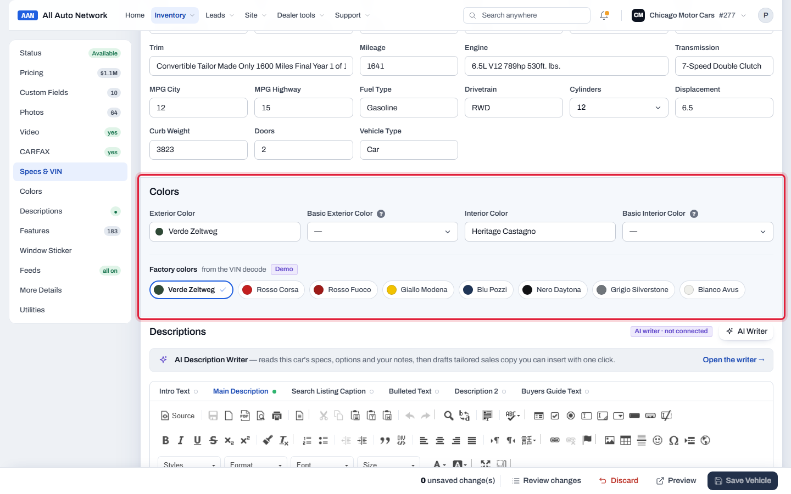
51-single-vehicle-colors - 52Single Vehicle
Done#52 · Bill · 2026-11-06
This should be on top of all the other sections...this is the meat and potatoes about the car and shows them that they are on the right car when they land on this edit car page
See the noteOpen the page (local)
done — the section, its rail button and the scroll-spy order moved to the top; the rail lights Specs & VIN on load
52-single-vehicle-specs-position - 53Single Vehicle
Done#53 · Bill · 2026-11-06
there really is no staging area...this is limbo land created by mistake in our current system. the Staging happens when someone submits the first step off the add a vehicle form but then doesn't save it on the second step then the car goes into a staging category and makes it impossible to find unless you search ALL from the main inventory admin screen, so I'm not against this staying in there with the sold/available status so that dealers can see what is tagged accidentally that way I guess. We do not have a Pending option so that should be removed as that is not an option in our system. Sale Pending is accounted for below and is the only pending option we have.
See the noteOpen the page (local)
done, commented out — the Pending button is commented out: Available · Sold · Staging
53-single-vehicle-status-pending - 54All Vehicles
Done#54 · Bill · 2026-11-06
Note sure if it is possible to upload from this screen since our image uploader is in an iFrame, but this could link to the image upload tab inside the edit vehicle I guess
See the noteOpen the page (local)
done — "Upload photos" opens the editor at its Photos section (
single-vehicle-gen11.html#photos) - 55All Vehicles
Done#55 · Bill · 2026-11-06
I know the edit button and the delete button (not all dealers get delete since so dangerous and we need to warn before activating on each dealer) but the photos and window sticker icons - will they link to those tabs in the edit of the car or something? Since there is window sticker links and buyers guides and most dealers don't even use ours?
See the noteOpen the page (local)
done — they open the editor at Photos / Window Sticker (
#photos, new#sticker); same for the expanded row's buttons - 56All Vehicles
Done#56 · Bill · 2026-11-06
Would love to see what this feature is? doesn't do anything so maybe it is future mod to the system?
See the noteOpen the page (local)
done (live feature), with #65 — "Inline edit" now turns on the live system's in-list editing (see #65); the button stays pressed while it is on
- 57All Vehicles
Done#57 · Bill · 2026-11-06
We are missing the "Newsletter Tools" link. While I'm not a big fan of advertising our barely working newsletter tool, a lot of dealers use it to download email lists for importing into other better newsletter tools and some dealers do have our newsletter subscribe forms on the front end of the site and this is where all that info is collected so it is needed.
See the noteOpen the page (local)
done (live feature), Alex Nov 16 — Alex, Nov 16: bring back Newsletter Tools only. The live dealer menu has it under Marketing (with Auto Locator). A Marketing menu with the one item "Newsletter Tools — Email lists and subscribe forms" is back on all four dealer pages; Craigslist posting stays commented out with the rest of the Oct 29 Marketing menu. The extra menu item made the one-row dealer bar overflow by up to 93px between 1024 and 1130px, so the shared two-row bar now starts below 1140px instead of 1024px
- 58All Vehicles
Done#58 · Bill · 2026-11-06
Us admin users need a "Form Editor" link here but dealers do not as it is just how we create AAN forms for dealers or edit existing.
See the noteOpen the page (local)
done (live feature) — the live dealer menu has Form Editor under Site Management (checked Nov 16). It is added on all four dealer pages, labelled "Dealer forms · AAN admins only" and marked
data-admin-only, so the backend can hide it from dealers - 59All Vehicles
Done#59 · Bill · 2026-11-06
there is really just the lead manager, there is not pages for the other links listed in this drop down so not sure unless those will be new features built out but currently it is just a link to our CRM
See the noteOpen the page (local)
done, commented out → New features — the live Leads menu is only the Lead Manager (checked Nov 16). Customers and Referrals are new-backend pages that are not in the live system, so they are commented out on all four dealer pages and moved to the New features list
59-dealer-nav-leads-menu - 60All Vehicles
Done#60 · Bill · 2026-11-06
So not every dealer has sort order so please note that will only show up as custom item for dealers that have that set up. As for New Submissions what is that? If it is newly added cars then they can see that in the inventory list below and sort by dates. We are missing the Feed Out Manager and most dealers 2020 and newer should have that link as it is a way for them to edit all available cars at once for their outgoing feeds
See the noteOpen the page (local)
done (Feed Out Manager; New submissions → New features) — Feed Out Manager added to the Inventory menu on all four dealer pages. New submissions is not in the live system (checked Nov 16), so it is commented out and moved to the New features list. Sort order stays (per-dealer, noted)
- 61All Vehicles
Done#61 · Bill · 2026-11-06
How do you change the order of the fields listed? We have a default that is there for every new user but they can customize it and then it remembers their layout so it is always the same when they login and they like to have them in a specific order. I know mine is very custom and then i have one field at the far right that I swap for other fields when I'm looking into issues for clients. The current system has a gear next to the heading that you can quickly swap it with another un-used field option and my default is for feeds, but then I change it to say carfax or locations or another field of data I need to see quickly on all cars when I'm looking into support issues for clients so I need to be able to swap the field quickly without adding and removing another column to my list
See the noteOpen the page (local)
done (live feature) — the mockup already had it in Columns: show or hide, move up / down, Reset, all remembered. Checked in the live Inventory Manager on Nov 16: every heading has a preferences icon whose menu lists the unused fields, then "remove item" and "Reset to default (all columns)". Added the same to the headings: a swap icon on each column the dealer may change (not Status, Stock, Make, Model, Price, Actions, nor the narrow Year); its menu swaps the column in place for an unused one, removes it, or resets. Choices the table has no room for are marked "No room" (the existing no-sideways-scroll rule), so at 1280 and on tablet only Remove and Reset are open. The layout is kept in this browser; per user on the server is a question for Ivaylo
- 62All Vehicles
Done#62 · Bill · 2026-11-06
Not sure if this is needed because most dealers do not search by options, but we could have the keyword search at the top of the search listing just search options as well so they could do a keyword search as if this options list had to show all options for all there inventory the lists would be in the millions as every brand words stuff differently and when dealers manually add options then they definitely write them all different, but as stated with the keyword search being able to search them I feel that is enough for the options.
See the noteOpen the page (local)
done, commented out — checked on Nov 16: the live Inventory Manager has no options filter and no keyword search (only per-column fields: Stock#, VIN, Make, Model…), and the new-backend export has no options filter either. It was a mockup demo, so the Options filter is commented out. The keyword search (from the export) does not cover options yet: the fixture has no option data. Question to Ivaylo
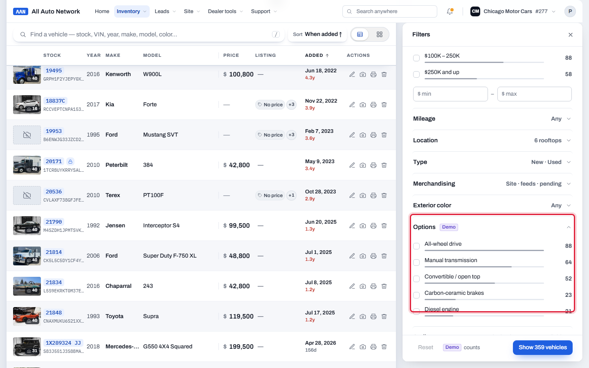
62-all-vehicles-options-filter - 64All Vehicles
Done#64 · Bill · 2026-11-06
This section should also show totals for discount price and total invoice (cost) price's too...the dealer that requested this in the old system actually asked for all 3 totals so this new display needs to account for that too
See the noteOpen the page (local)
done (live feature) — checked in the live Inventory Manager on Nov 16: above the list it shows Total Price, Total Discount Price and Total Invoice Price. The Value card now has Total discount price and Total invoice price under Average price. The figures are Chicago Motor Cars' live totals on Nov 16: $0 and $0 (it fills neither field; live Total Price that day was $48,693,588 for 327 cars). The asking value stays the export's ($66.3M, Sep 9), so the card mixes two dates; the title on the totals says where they come from. The top row of cards is 38px taller
- 65All Vehicles
Done#65 · Bill · 2026-11-06
Here is a list of fields that should be editable from this screen so dealers can update them on multiple vehicles at one time then on the old system we had an update button at the bottom and they could click and save all cars at one time rather then needing to edit these items one car at a time): Price [input field] Discount Price [input field] Invoice Price [input field] Do Not Display On site [checkbox] Sale Pending [checkbox]
See the noteOpen the page (local)
done (live feature) — checked in the live Inventory Manager on Nov 16: the rows edit Status, Price and Discount Price in place, with one Update button under the list (Miller's list; Invoice Price, Do Not Display and Sale Pending are on Bill's list, see Screenshots to ask Bill for). "Inline edit" switches the table to a working set (Status · Stock · Year · Make · Model · Price · Discount Price · Invoice Price · Do Not Display On Site · Sale Pending · Actions) with fields and checkboxes in the rows; changed fields turn blue; a bar at the bottom counts the changed vehicles and has Discard and Update. Turning it off with unsaved changes asks first. Status is not editable here: Bill's list does not have it
- 66Single Vehicle
Done#66 · Karen · 2026-11-03
When you open the YouTube video there are tabs on the right-hand side and a preview list of videos. The first tab is ALL videos, and there are many videos that are not vehicle-related; that tab should probably be removed.
See the noteOpen the page (local)
done (Alex, Nov 16) — that tab belongs to the YouTube page the preview used to open. Alex, Nov 16: play the video inside the mockup. A click on the preview now plays it in place, in YouTube's embedded player (youtube-nocookie, rel=0), in exactly the preview's box. No YouTube page opens, so there is no All videos tab. Not checked against the live system; listed under Alex's responsibility
- 67All Leads
Done#67 · Karen · 2026-11-03
Under Type, the font should match the rest of the page
See the noteOpen the page (local)
done — Type is 14px in the page's face, as Source (was 12px mono)
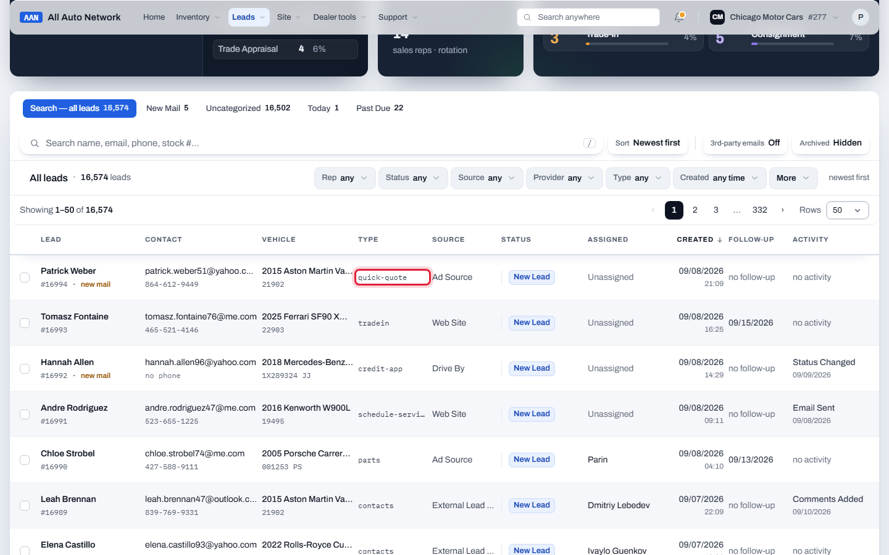
67-all-leads-type-font
4 Kept as it is or on the after-go-live list
- 15Single Ticket
After go-live#15 · Bill · 2026-11-11
Does not need to be part of the mockup since this is a new feature request, but one idea I have been asking for, for years now is the ability to tag a ticket as "waiting on co-worker" checkbox and drop down to select the person you are waiting on. This allows a ticket assigned to multiple people to have it as waiting on my work list while on the other persons list it is open active ticket. Say I need to update images on a site, but I have to wait for Alex to make those images then on my list the ticket is waiting on Alex to complete his part of the ticket and once he is tagged completed then it will open up on my list. I just wanted the notes here again since this feature is needed but has yet to be built and once we get the new system up and running it is a feature that should be built into it.
See the noteOpen the page (local)
not built: new feature — New features list
- 31All Vehicles
After go-live#31 · Chris · 2026-11-07
Alex, dying to see the full suite of seasonal, holiday, personalized icons. If they have overdue bill turn it into a dollar sign with account->paybill link
See the noteOpen the page (local)
not built: new feature — New features list. Ivaylo's opposite note on the same logo was deleted by Alex
- 35Single Vehicle
After go-live#35 · Bill · 2026-11-06
Only some dealers have this custom feature right now (Exclusive, FC Kerbeck, mayber a couple others) but this is great and should be options for all so keep this here...as they could use it to print from as well but generally the ones who have this then show the sticker link on the VDPs of the cars.
See the noteOpen the page (local)
no change: keep — on the New features list (offer it to every dealer). Checked on Nov 16: Miller Motorcars' live editor has Window Sticker print links but no factory sticker, as Bill says (a custom feature for a few dealers); the mockup keeps it
- 39Single Vehicle
After go-live#39 · Bill · 2026-11-06
Please note only a couple dealers have this custom option to not report vins but we should keep it and make it a new feature available to everyone as we could use it not to report a vin if the dealers want to wait on sending the cars to carfax.
See the noteOpen the page (local)
no change: keep — on the New features list (for every dealer). Checked on Nov 16: in the live editor it is the per-dealer custom field
no_carfax(Miller Motorcars has it); the mockup keeps it
5 No change needed
Already there, done earlier, or a note for the record.
- 37Single Vehicle
No change#37 · Bill · 2026-11-06
Please note that our image upload tool is in an iFrame as we use some 3rd party code for this feature
See the noteOpen the page (local)
no change — for the handoff: the photo row stays a mock; the uploader itself is the 3rd-party iframe
- 63All Vehicles
No change#63 · Bill · 2026-11-06
Not sure where the custom fields items came from but for custom items only some dealers have these so if this is just to show how a dealer with custom items would show up that is fine but just note not all dealers have them and even dealers with custom fields not all have them show up on this page only a handful that asked for them that are items that would need changed or checked daily type of things.
See the noteOpen the page (local)
no change — noted for the handoff: custom columns are per-dealer
- 68Single Vehicle
No change#68 · Karen · 2026-10-30
The save button should be in a prominent position and stand out more. There should also be a save button at the bottom of the page so the client does not have to scroll all they way back up to the top.
See the noteOpen the page (local)
already there — the head has the blue Save, and the bottom bar has Save Vehicle (with Review changes / Discard) on every scroll position
- 69All Vehicles
No change#69 · Karen · 2026-10-30
There should be separate columns for Discount and lease prices, which can be added to the control panel by the dealer if they use them
See the noteOpen the page (local)
already there — Columns → Pricing has Discount Price, Invoice Price, Lease Price and Lease Term (off by default). Not a conflict with Bill #49: he removes "Discount", not "Discount Price"
- 70All Vehicles
No change#70 · Karen · 2026-10-30
I think the filters area and the clear all button need to stand out more.
See the noteOpen the page (local)
done earlier — Clear all became red on Oct 29 (Ivaylo and Karen both asked); nothing new this round